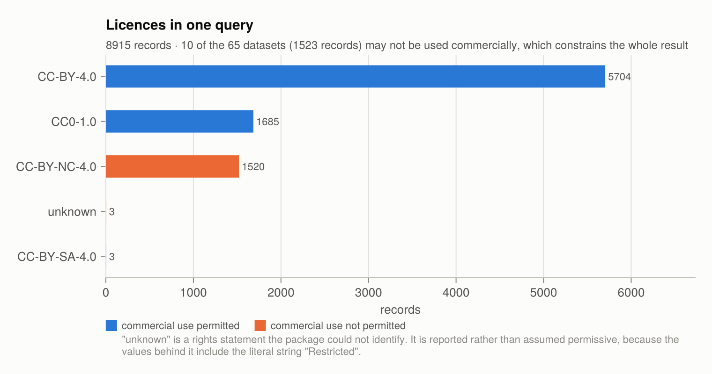

Licensing and citation
Using OBIS data carries obligations. They are not onerous, but they are real, and they are easy to discharge incorrectly because the information needed is spread across the dataset metadata and the moment of retrieval. The package collects both.
What the OBIS data policy requires
The policy is at manual.obis.org/policy.html. Two sections bear directly on a user of this package.
Section 4, conditions of use. Any use of OBIS data or derived products — the policy names "software applications, workflows and papers" explicitly — should be properly cited. The recommended format for data retrieved from OBIS includes the access date:
[Dataset citation available from metadata] [Data provider details] [Dataset] (Available: Ocean Biodiversity Information System. Intergovernmental Oceanographic Commission of UNESCO. obis.org. Accessed: YYYY-MM-DD)
Sections 3 and 7, licences. OBIS accepts three licences, with a stated preference for the most permissive:
- CC0-1.0 — public domain dedication. No attribution legally required.
- CC-BY-4.0 — attribution required.
- CC-BY-NC-4.0 — attribution required, no commercial use.
The licence is set per dataset, so a single result usually spans more than one, and the most restrictive one governs what may be done with the result as a whole.
Knowing what you may do
OceanBIS.licenses summarizes a result: one row per licence, with how many datasets and records fall under it and what it permits.
using OceanBIS, Dates
recs = OceanBIS.occurrence(;
scientificname = "Abra alba",
geometry = "POLYGON ((2.0 52.5, 2.0 51.0, 4.5 51.0, 4.5 52.5, 2.0 52.5))",
startdate = Date(2000, 1, 1),
enddate = Date(2020, 12, 31),
)
rights = OceanBIS.licenses(recs)The summary is a table like any other, so PrettyTables.jl prints it directly. This is the one worth laying out properly: it is what you read before building anything on the data, and the answer is a shape — which permissions hold over which share of the records — rather than a number.
using PrettyTables
# Digit grouping: record counts are the one thing here you read at a glance.
group(n) = replace(string(n), r"(?<=[0-9])(?=(?:[0-9]{3})+$)" => ",")
# The columns are plain vectors, so choosing and renaming them is a NamedTuple.
sheet = (
datasets = rights.datasets,
records = rights.records,
redistribute = rights.permits_redistribution,
commercial = rights.permits_commercial_use,
attribution = rights.requires_attribution,
)
pretty_table(
sheet;
title = "Abra alba · southern North Sea · 2000-2020",
subtitle = "$(group(OceanBIS.nrow(recs))) records · " *
"accessed $(OceanBIS.metadata(recs).accessed)",
# Licences as row labels: the question is what each one permits, so it is the stub.
row_labels = rights.license,
stubhead_label = "Licence",
column_labels = [["Datasets", "Records", "Redistribute", "Commercial", "Attribution"]],
# The combined result is what governs, so the totals get a row of their own.
summary_rows = [
(_, j) -> j == 1 ? sum(rights.datasets) :
j == 2 ? group(sum(rights.records)) : "",
],
summary_row_labels = ["All datasets"],
formatters = [
(v, i, j) -> j == 2 && v isa Integer ? group(v) : v,
(v, i, j) -> v isa Bool ? (v ? "✓" : "✗") : v,
],
# Colour belongs to the terminal; the marks carry the same reading without it.
highlighters = [
TextHighlighter((_, i, _) -> rights.license[i] == "unknown", crayon"yellow bold"),
TextHighlighter((d, i, j) -> j >= 3 && d[j][i] === false, crayon"red"),
TextHighlighter((d, i, j) -> j >= 3 && d[j][i] === true, crayon"green"),
],
# The two caveats belong to particular cells, so they are footnotes, not prose.
footnotes = [
(:column_label, 1, 4) =>
"Six CC BY-NC datasets make the combined result non-commercial.",
(:row_label, 4, 1) => "One provider's rights statement could not be identified.",
],
alignment = [:r, :r, :c, :c, :c],
row_label_column_alignment = :l,
table_format = TextTableFormat(; borders = text_table_borders__unicode_rounded),
source_notes = "Ocean Biodiversity Information System, IOC-UNESCO — obis.org",
) Abra alba · southern North Sea · 2000-2020
5,921 records · accessed 2026-09-07
╭──────────────┬──────────┬─────────┬──────────────┬─────────────┬─────────────╮
│ Licence │ Datasets │ Records │ Redistribute │ Commercial¹ │ Attribution │
├──────────────┼──────────┼─────────┼──────────────┼─────────────┼─────────────┤
│ CC-BY-4.0 │ 28 │ 3,875 │ ✓ │ ✓ │ ✓ │
│ CC0-1.0 │ 8 │ 1,136 │ ✓ │ ✓ │ ✗ │
│ CC-BY-NC-4.0 │ 6 │ 907 │ ✓ │ ✗ │ ✓ │
│ unknown² │ 1 │ 3 │ ✗ │ ✗ │ ✓ │
├──────────────┼──────────┼─────────┼──────────────┼─────────────┼─────────────┤
│ All datasets │ 43 │ 5,921 │ │ │ │
╰──────────────┴──────────┴─────────┴──────────────┴─────────────┴─────────────╯
¹: Six CC BY-NC datasets make the combined result non-commercial.
²: One provider's rights statement could not be identified.
Ocean Biodiversity Information System, IOC-UNESCO — obis.orgPrettyTables is not a dependency of OceanBIS.jl. It renders the result because results are Tables.jl sources, which is the same reason DataFrame(rights) works; in a terminal the highlighters do the reading for you, green where a permission is granted and red where it is refused.

Read the permission columns before building anything: a single CC BY-NC dataset makes the whole result non-commercial, and this query has six. A summary that showed only the majority licence would be worse than no summary, which is why the breakdown is per licence rather than a single verdict.
To check before retrieving anything, query the datasets first:
OceanBIS.licenses(OceanBIS.dataset("Abra alba"))The unknown category
OBIS publishes the licence as free prose in a field called intellectualrights, not as a code. The corpus contains 63 distinct strings for what are essentially three licences: the version appears inside or outside the parentheses, whitespace is doubled, and a handful of entries are bare words. The package normalizes what it recognizes and reports the rest as unknown, keeping the original text in intellectualrights either way.
unknown is not a technicality. Among the observed values are the literal strings Restricted and Unrestricted, and an Attribution-ShareAlike (CC BY-SA) licence that is not one of the three OBIS accepts. Filing any of those under a permissive default would be the one failure mode with consequences, so the package does not guess: permits_redistribution is false for unknown.
recs = OceanBIS.occurrence("Abra alba"; limit = 2000)
unknown = [recs.intellectualrights[i] for i in 1:OceanBIS.nrow(recs) if recs.license[i] == "unknown"]
unique(unknown) # read them and decideProducing the citations
OceanBIS.citations builds one entry per dataset a result drew on.
recs = OceanBIS.occurrence("Abra alba"; limit = 2000)
# As a table.
cites = OceanBIS.citations(recs)
cites.dataset_id, cites.records, cites.license, cites.doi, cites.formatted
# As text, ready to paste.
print(OceanBIS.citations(recs; format = :text))
# As BibTeX, for a manuscript.
write("obis-references.bib", OceanBIS.citations(recs; format = :bibtex))A BibTeX entry looks like this:
@misc{obis_8acba7e72e50,
title = {ICES Zoobenthos Community dataset},
year = {2025},
howpublished = {Ocean Biodiversity Information System (OBIS), Intergovernmental Oceanographic Commission of UNESCO},
url = {https://obis.org/dataset/8acba7e7-2e50-4490-8328-b78a30472508},
note = {Accessed: 2026-09-06. License: CC-BY-4.0 (https://creativecommons.org/licenses/by/4.0/). Records used: 7943.},
}The access date
The citation format requires Accessed: YYYY-MM-DD, and nothing in the data supplies it — it is a property of the request. The package records it when the request is made and stores it on the result, so the citation is correct without you tracking anything:
OceanBIS.metadata(recs).accessedIf you cached the responses (see Reproducibility) and re-run months later, the citation should carry the date the data was actually retrieved. Read it from the cache metadata:
for e in OceanBIS.cache_entries()
println(e["endpoint"], " accessed ", e["accessed"])
endDatasets with no citation string
About one dataset in fifteen has no citation text in its metadata, and a handful contain a literal yyyy-mm-dd placeholder left by the provider. Where the citation is missing the package assembles one from the title and publication year, so the dataset is still identifiable. It never omits a dataset from the citation list because its metadata is incomplete.
Citing the database as a whole
Where a result draws on many datasets, the policy allows citing the integrated database in addition to the individual datasets, taking each dataset's restrictions into account. It is not a substitute for them.
OceanBIS.obis_citation(; description = "Distribution records of Abra alba")The general citation for the system:
OBIS (YEAR) Ocean Biodiversity Information System. Intergovernmental Oceanographic Commission of UNESCO. https://obis.org.
A complete workflow
using OceanBIS, DataFrames
recs = OceanBIS.occurrence(;
scientificname = "Abra alba",
geometry = "POLYGON ((2.0 52.5, 2.0 51.0, 4.5 51.0, 4.5 52.5, 2.0 52.5))",
)
# 1. May I use these as I intend to?
summary = OceanBIS.licenses(recs)
if !all(summary.permits_commercial_use)
@warn "This result contains non-commercial data."
end
if !all(summary.permits_redistribution)
@warn "Some rights statements could not be identified; check them before redistributing."
end
# 2. Record the credit alongside the analysis.
write("references.bib", OceanBIS.citations(recs; format = :bibtex))
CSV.write("citations.csv", OceanBIS.citations(recs))
# 3. Keep the data itself with its provenance.
CSV.write("occurrences.csv", DataFrame(recs))